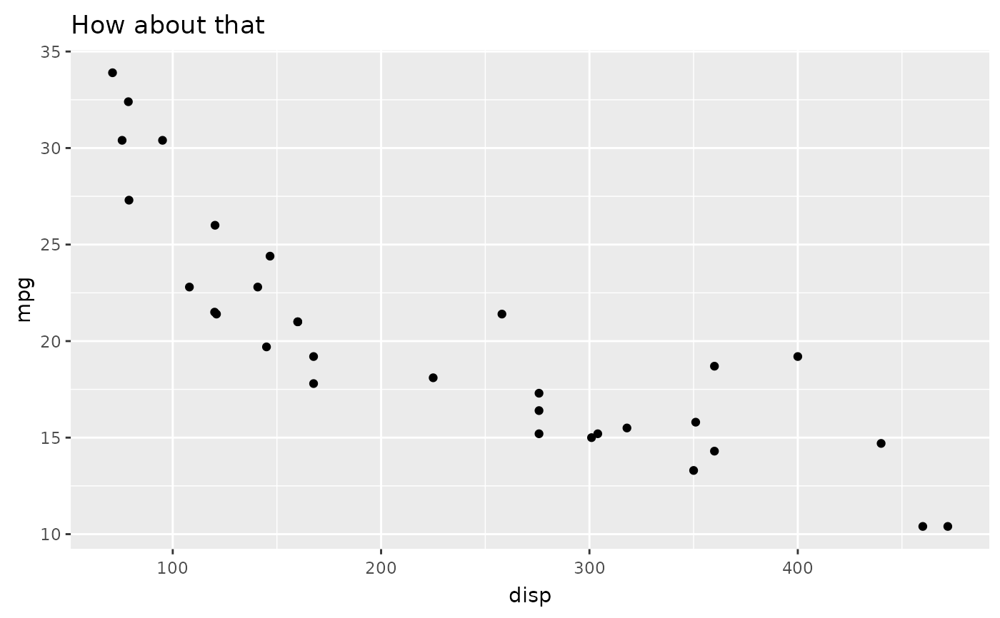

Convert all text elements in a theme to marquee elements
Source:R/element_marquee.R
marquefy_theme.RdWhile element_marquee() should behave similar to ggplot2::element_text()
when used on plain text (i.e. text without any markdown markup), the reality
can be different. This is because the text shaping engine used by marquee
(textshaping::shape_text()) may differ from the one used by the graphics
device (which is responsible for laying out text in element_text()).
Differences can range from slight differences in letter spacing to using a
different font altogether (this is because the font keywords "", "sans",
"serif", "mono", and "symbol" may be mapped to different fonts
depending on the shaper). One way to handle this is to provide an explicit
font name for the elements, but alternatively you can use this function to
convert all text elements in a theme to element_marquee()
Examples
library(ggplot2)
ggplot(mtcars) +
geom_point(aes(disp, mpg)) +
ggtitle("How about that") +
marquefy_theme(theme_gray())
